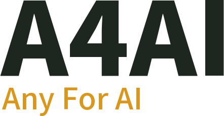

군용 UGV 야지 경로판단 AI 프로젝트
연구원 김위준 · 2026.10.06
TRAVERSABILITY ENGINE
CLASSES
5
· FREE / LOW / MED / OBST / UNK
POINTS
0
PATH CANDIDATES
0
A4AI · OFF-ROAD PATH DECISION AI
무인지상체계가 야지에서 길을 판단하도록 · 연구원 김위준 · 2026.10.06
CLICK OR PRESS ANY KEY TO START
군용 UGV 야지 경로판단 AI 프로젝트 · 2026.10.06
인트로
발표 보기
전체 보기
발표자 노트
PDF 다운로드
◀ 이전
다음 ▶
발표 설명 (N)
전체 화면 (F)
전체 보기